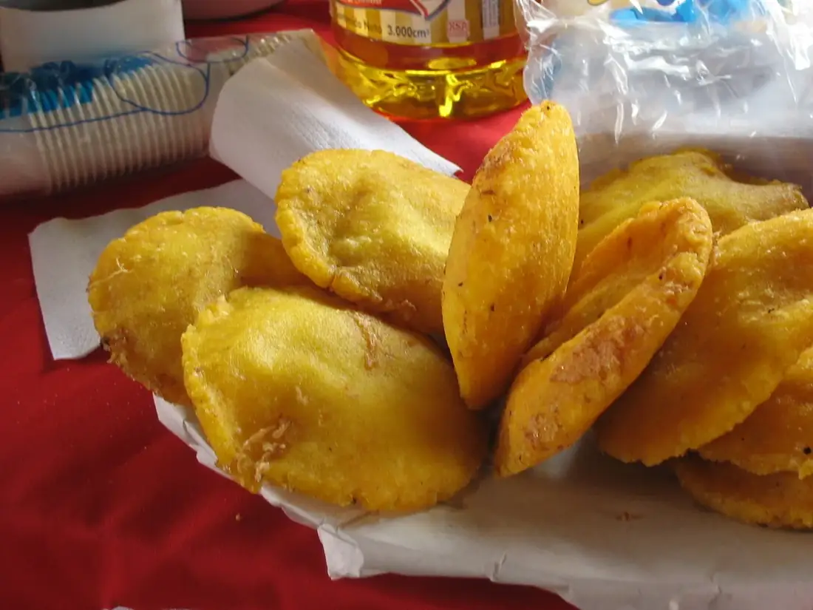
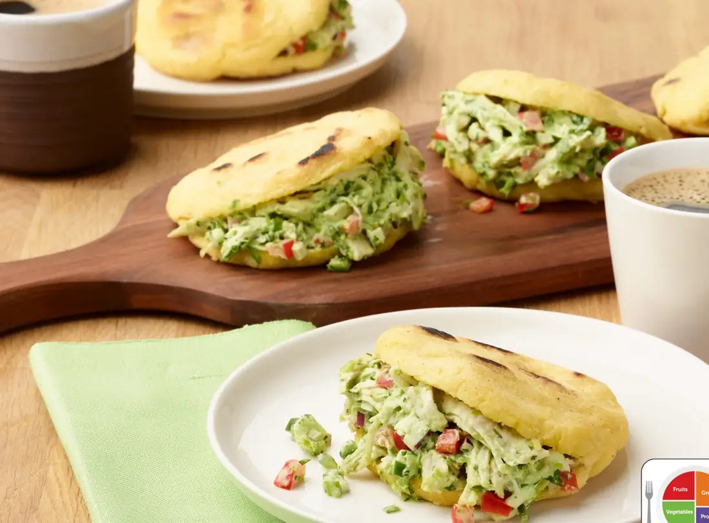

One grain.
Many kitchens.
Meet three very different corn cakes, then follow the evidence of how Indigenous maize traditions, colonial contact, migration, and modern kitchens shaped the arepas we know.
Explore the recipes ↓The ancient cake is a reconstruction. The Colombian and Venezuelan recipes are documented modern expressions. Each page links to its sources.
Three cakes, three moments
Begin with a dish or start before the present borders. Every card opens a full recipe with context and source notes.

Whole maize on a griddle
A cookable interpretation of Indigenous maize processing described in sixteenth-century accounts.
Read the ancestral cake ↗
Arepa’e huevo
The Caribbean coast’s puffed, fried maize pocket with an egg inside.
Cook the Colombian arepa ↗
Reina Pepiada
A griddled arepa filled with chicken and avocado, named in the 1950s.
Cook the Venezuelan arepa ↗How the cake traveled and changed
Follow maize through Indigenous exchange, read the first surviving descriptions of arepas, and see how new ingredients and migration shaped regional identities. Read the history ↗